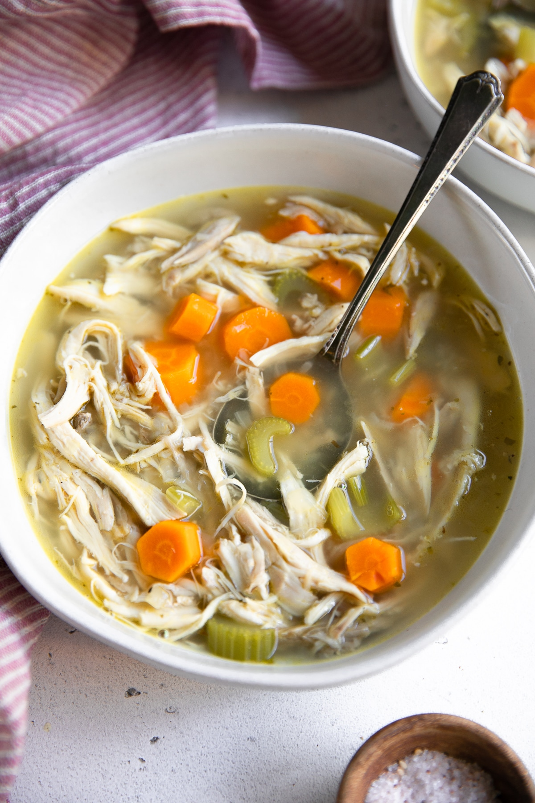
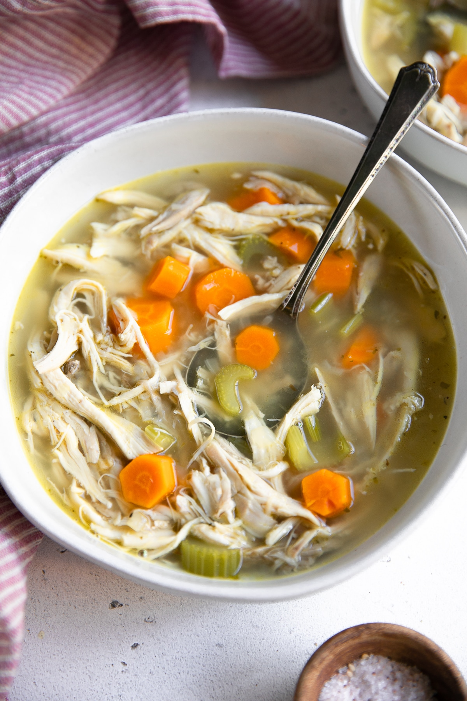
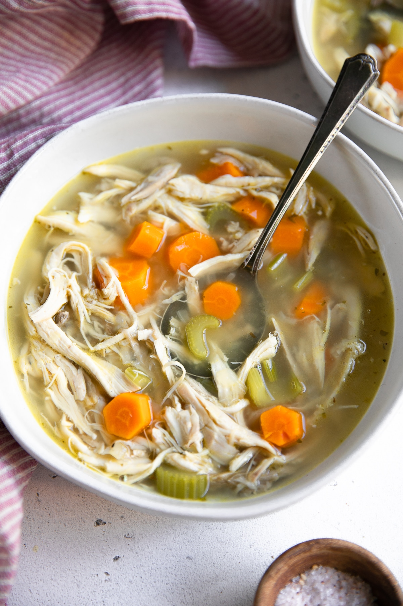

The tender chicken in the soup is delicious just inhaled!

| 1 stem Celery | 1 tbsp Corn Oil |
| 1L Water | 1 stick Cinnamon |
| 5 pcs Chicken | 2 Star Anise |
| 10 Ginger | 2 Cloves Garlic |
| 1 Shallots | 2 Cardamom |
| 1 small Carrot | 1 Potato |
| 2 Tomato | 1 Red Onion |
| 1 sprig Parsley | 3 tbsp MAGGI® Concentrated Chicken Stock |
Heat a saucepan, add corn oil, cinnamon, star anise, cloves, cardamom, onion, garlic and ginger. Saute until wilted.
Add chicken, water and bring to a boil.
Add the celery stalks, carrots, potatoes, tomatoes, onions, MAGGI® chicken cubes and soup leaves. Let it simmer for 10 minutes.
| Energy | 146.67 kcal |
| Protein | 20.87 g |
| Carbohydrates | 7.58 g |
| Fats | 3.46 g |